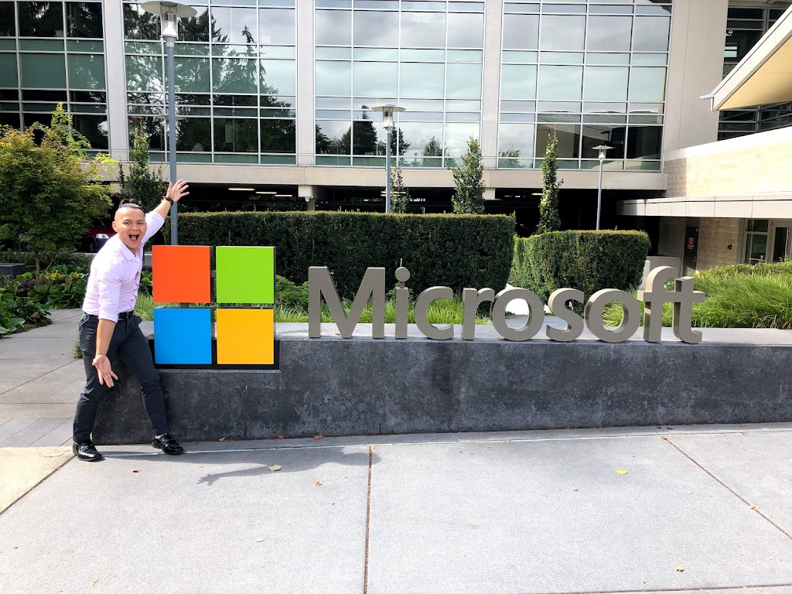
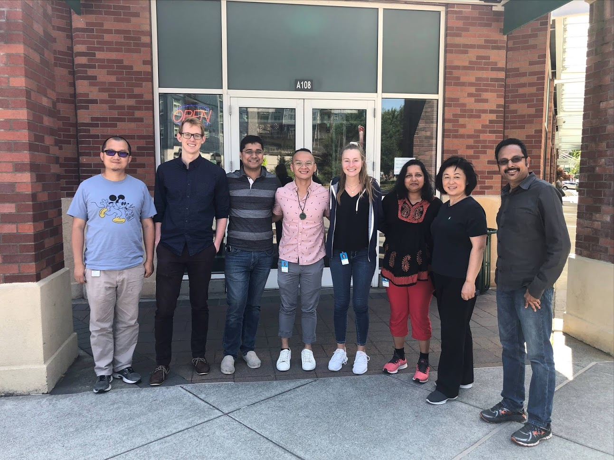
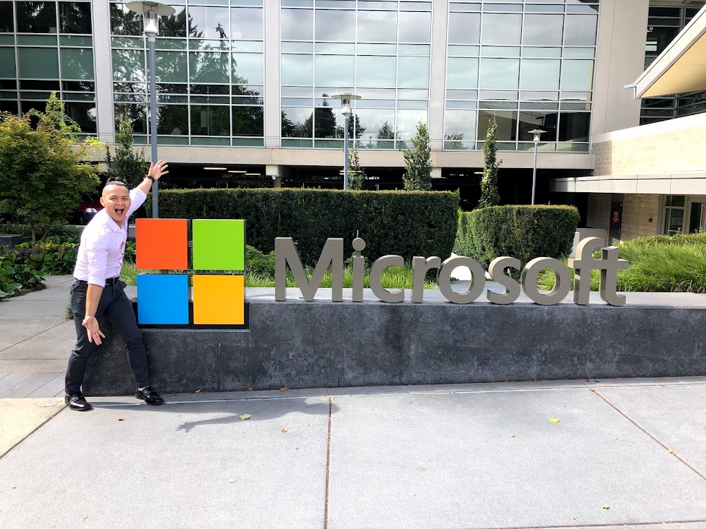
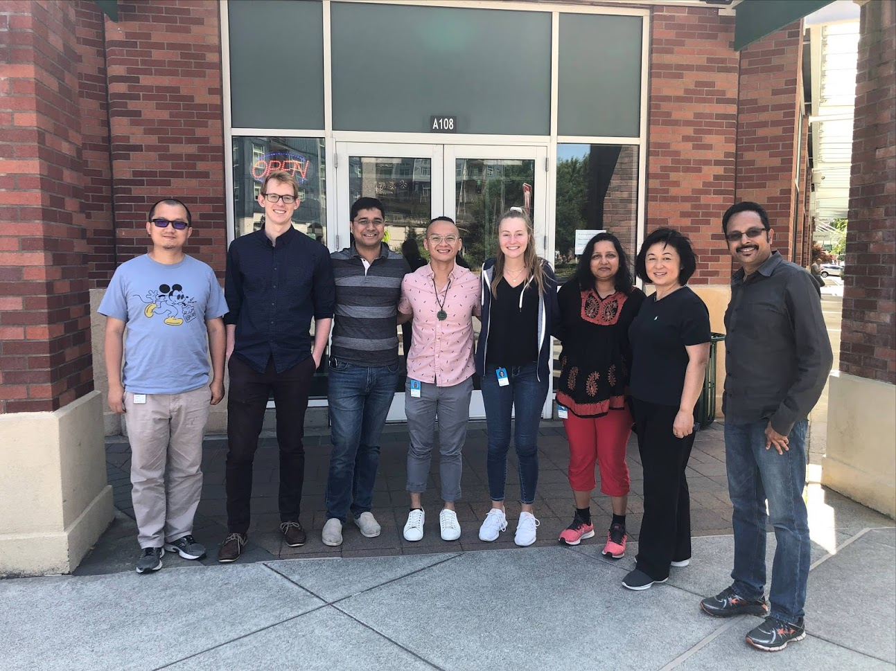

Microsoft
 



I began my role as a full stack software engineer for Microsoft under the Digital Security and Risk Engineering organization shortly after graduating from college in September of 2018. It was a very exciting time for me. I thought about how finally after all my years of education, it’s finally time to put the knowledge to use. There wasn’t going to be any more schooling, no more set times and schedules or something as structured as an education. It was finally time to enter the industry. Imposter Syndrome ran rapid in my mind. The potential idea of me feeling like I don’t belong at a place like Microsoft because I wasn’t fit stormed my mind sometimes. However, I didn’t let that bring me down. I know in my heart that even if I’m not the smartest person in the room, I know that what is in my control is my own knowledge. I can always learn more, adapt, and critically think in my own way to bring my contributions to Microsoft. Under the Access and Certificate Team, I was put on a brand new project called Identity Pass, something to build completely from scratch. As a newly hired college graduate, my fear would be working with legacy code and figuring cluster messes up. However this is something I WAS SO EXCITED FOR. Something from the ground up. I got hands on experience in using all my education right from the beginning. My project focused on bootstrapping the onboarding process for new employees and as a credential recovery service for existing employees. The goal of this project is to help contribute to Microsoft's password-less mission. Right when I joined, only the discussions of what technology was happening at the time. I gained experienced with designing architecture for a project, designing the project to be maintainable, scalable, while yet adaptive in case new business requirements are injected in. Lot's of software design principles were applied, lots refactoring of our giant service into of micro-services were introduced. I learned why certain decisions were made, why did we break down our API Server into smaller pieces, etc. I got the full stack experience, client-side development, backend-side development, and even some database work. In the beginning of the project, our solution was provided through a React JS web. Eventually the direction of the project switched towards a React Native application due to new business requirements for the service to be an iOS and android application. Our backend was in DOT NETCORE. We hosted our solution using Microsoft’s Cloud Service called Azure. I was able to understand and gain a lot more cloud experience through this project. I’m very happy to have had this opportunity to work at Microsoft straight out of undergrad and to be with such a wonderful team.